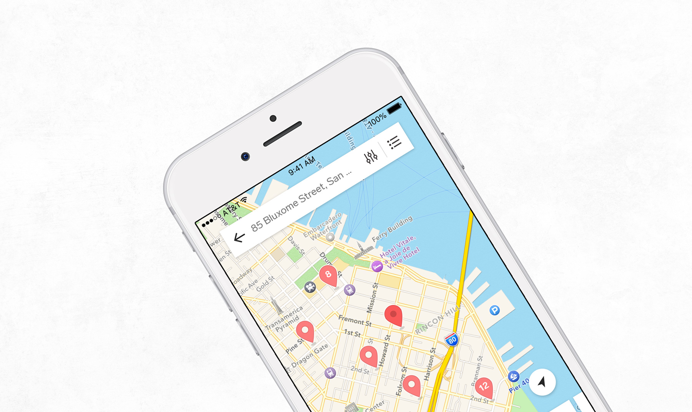

ROLE
Product Design Intern
LENGTH
3 months
YEAR
2018
I had the privilege of joining Collective Health's Design Systems team, where I helped develop a design system for the iOS and Android consumer apps.
Case study in progress, come back soon
LinkedIn · Updated